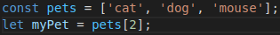
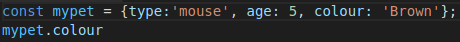

The Wonderful world of JavaScript and The Dom
An analogy to describe the differences between HTML and CSS
HTML and CSS have a symbiotic relationship. Imagine building your house and turning it into a home. The HTML is the bones of the house, the walls, the roof, the floors. Everything you need for a structure to be safe and liveable. The CSS is everything you put in the house that you need to make it inviting and cosy, the wall paint, the carpet and rugs, the furiture and firepalce.
Explain control flow and loops using an example process from everyday life, for example 'waking up' or 'brushing your teeth'. (But not those ones).
The control flow is the order that the computer executes the code within a script. It flows down from the first line to the last line, unless it comes across conditionals or loops which change the control flow. Loops are used when you want a task to be repeated, when creating a loop it is important to include code that tells the loop when to end. Say you need to brush your teeth. First you'd go to the bathroom, then find your brush and tooth paste, then apply the paste, brush your teeth, and then wash up the brush and garggle your mouth. This is the control flow. Now say you need to repeatedly brush your teeth, a loop would cause you to keep repeating this, until something within the looped eneded the loop. Say, you need to brush your teeth 3 times in a row, and then stop.
Describe what the DOM is and an example of how you might interact with it.
The Document Object Model is an interface used by programs to allow them to see all of the objects that create a web page. While also allowing you to edit the structure, style and content of the web page. Let's say you wanted to change the size of all your aragraphs on your web page, you could use the DOM to search for all the paragraphs, and then once you've found them you can apply the new size you want them to be to all of them.
Explain the difference between accessing data from arrays and objects.
An array is a variable that holds more than one value. Each of these has a number, one thing to note is that in javascript arrays start at 0. Below is an example. If you wanted to access mouse you would need to access it using it's array number.
Objects are variables that contain a range of properties that contain different values, each of these objects and their value are seperated by a coma. Below is an example. If you wanted to access the colour of your pet, you would write the object's name, followed by a full stop and the name of the property you'd want to access.
Explain what functions are and why they are useful.
A function is a block of JavaScript code written to perform a particular task, they are a key part of writing any JavaScript code. They're basically the key instructions you give your code, if you need to solve any problems, create new arrays or objects or discover anything about your code you will use functions to do so.